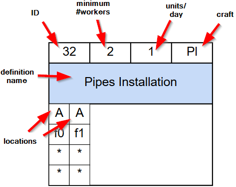
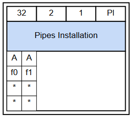
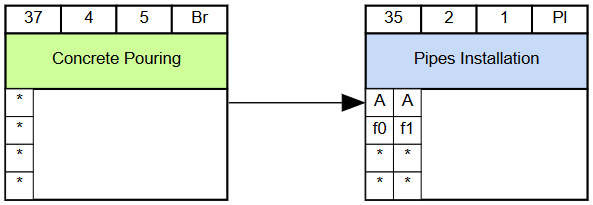
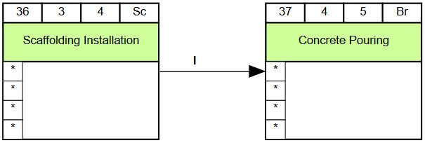
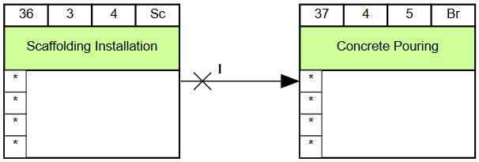
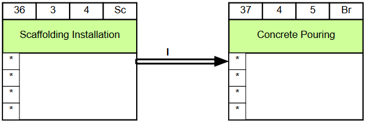

A task to be executed in the given locations by the given craft.
Order
Each attribute can be assigned to an order type:
NONE:
Ignore this attribute (default)
PARALLEL:
Partition/Parallelize values of this attribute.
All following specifications only apply within the same value of this attribute.
ASCENDING:
Values of this attribute are ordered ascending.
DESCENDING:
Values of this attribute are ordered descending.
Exclusiveness

In locations of the given scope (in the properties), while this task is being executed,
no other tasks can be performed
Dependencies

Finish the source task in every location before starting the target task in any location.
Scope

For all common locations of the given scope, finish the source task in that location
before starting the target task in that location.
Alternate Precedence

When the source task is finished in a location of the given scope, wait for the target task to be finished there
before proceeding to the next location.
Chain Precedence

When the source task is finished in the given scope, do not performed other tasks until the target task is started there.